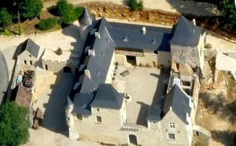
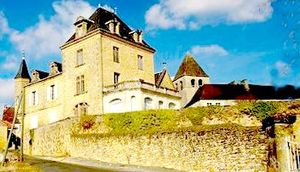
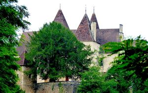
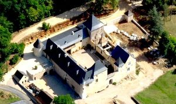
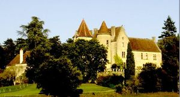
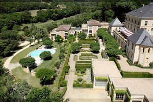
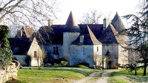
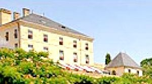

Recensement Jean-Claude Truffet
| Département | 24 — Dordogne |
| Canton | Sarlat la Canéda |
| Commune | Vitrac |
| Type d'édifice | Château |
| Période d'origine | XVII-XVIII |
| Coordonnées GPS | 44° 50' 18,4" Nord, 1° 12' 2,3" Est. |








Le château de Montfort (voir article). Le château de Vitrac, à côté de l'église. Le manoir des Vayssières des XVe et XVIe siècles, inscrit au titre des M.H en 1970 pour ses façades et toitures.
ROCHEBOIS transformé en hôtel de luxe par monsieur Louis de Van de Walle
GRIFFOUL, Le village est composé de trois sites distincts: le vieux bourg, le hameau de Montfort et le port. La commune possède un important patrimoine castral avec pas moins de sept châteaux et manoirs répartis sur son territoire, et parmi eux le château de Griffoul, ancienne demeure des Griffoul de Laroque, des Grézel, des Hauts-Champs et des Saint-Ours.
De ce manoir déjà cité en 1491, on parle alors de Griffolium, il subsiste des tours découronnées encadrant un logis, très retouché, à côté d'une tourelle carrée à colombages, le tout construit aux XVIIe et XVIIIe siècles, dominant la Couze du haut d'un promontoir rocheux.
Le château de MAS-ROBERT est un château bâti à Vitrac, sa construction date du XVIe au XVIIe siècle. VAYSSIERES, la construction du manoir des Vayssières date des XVe et XVIIIe siècles. Le manoir eut pour origine un prieuré de l'ordre de Grandmont, fondé vers 1140-1145. Il a appartenu en premier au Diocèse de Sarlat. Par la suite, il fut uni au Prieuré de Francou en Quercy. Abandonné en 1370, il tomba en ruine. Au XVe siècle, fut bâti à côté du prieuré, un petit manoir propre à résister aux pillards. L'habitation comporte un corps de logis d'un étage sur rez-de-chaussée, avec un pavillon en retour à chaque extrémité, côté façade principale. Le quatrième côté du quadrilatère ainsi formé, devait à l'origine comporter une muraille. L'accès se faisait alors par le côté Ouest. Au centre de la façade, une tour ronde renferme l'escalier. Une autre renforce l'angle Sud-Ouest. La façade postérieure et la tour d'angle ont été repercées au XVIIIe siècle. L'intérieur a conservé ses plafonds peints du XVIIIe siècle, à décor de rinceaux et feuillage en grisaille, sur fond jaune pâle. Le manoir est inscrit partiellement aux M.H. pour ses façades et toitures, depuis le 23/09/1970. ROCHEBOIS édifice de plan rectangulaire à trois niveaux toit en ardoise en croupe.
monsieur Louis de Van de Walle
"
A Vitrac ; Griffouls grav 3 - 4. Marobert grav 5. Rochebois grav 6 .Vayssières grav 7 GPS : 44° 50' 18,4" Nord, 1° 12' 2,3" Est.